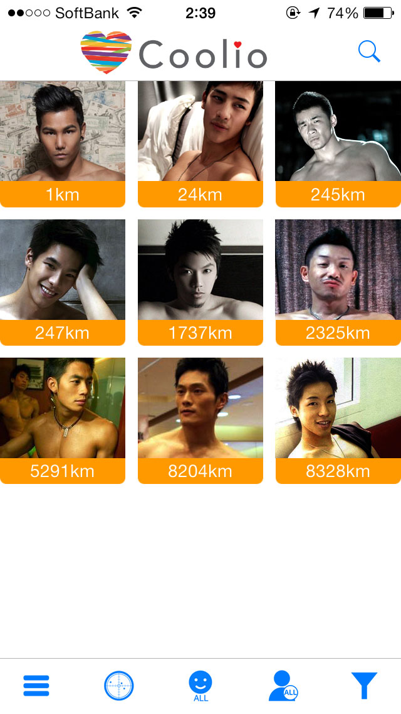
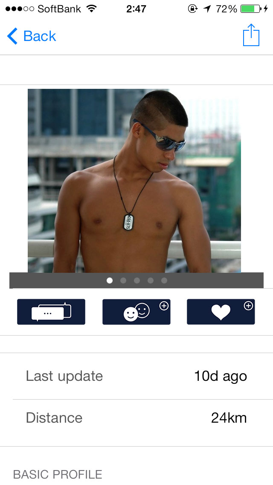
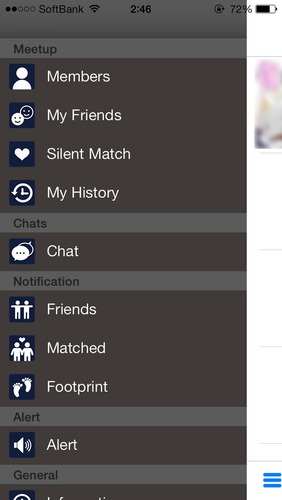
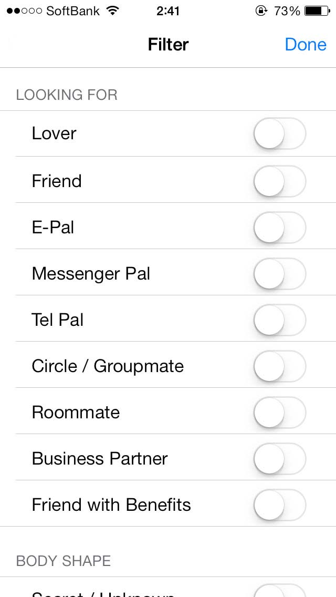

概要
CoolioはGPSの位置情報をもとに多くの人とコミュニケーションをとれるアプリです。
|  |
 |
|
|  |
 |
・詳細プロフィール
年齢身長体重など基本的なプロフィールはもちろん
人種、セクシャリティ、体系、目的、ヘアスタイルなど30項目以上の詳細なプロフィールを設定可能です。
・メンバー探し
距離順/ログイン時間順でのソート
オンラインのユーザーだけを抽出
新規登録したユーザーだけを抽出
プロフィールによるフィルタリング
・マイフレンド
友達を登録していつでもアクセスできるように
・サイレントマッチ
ちょっと気になる子がいたら「サイレントマッチ」
相手には通知されませんが、もし相手もあなたに「サイレントマッチ」すると「マッチ」として通知されます
・履歴
一度見たユーザーは履歴として記録されます
・チャット
もちろんチャット可能です。
チャットしたことのあるユーザーはリストから探しましょう。
・通知
フレンドリストに登録された時、マッチした時に通知されます。
また足あとも見ることが出来ます。
・公開設定(プライバシー設定)
自分の好みでないユーザーに対しては、自分の位置情報やプロフィールを通知しないように設定可能です。
年齢やセクシャリティ、人種でフィルタ出来ます。
・ブロック機能
望まない相手にあなたのプロフィールや位置情報は通知されません。
・通報機能
マナー違反のユーザーを運営に通報可能です。
運営以外には通知されません。
・注意事項
自己責任での利用となります。
本アプリを使用した結果に対し、運営側は一切の責任を持ちません。
・禁止事項
以下の画像、行為を禁じます。
違反と判断した場合アカウントを即時停止しますのでご注意ください。
全裸画像、無修正画像、18歳未満の画像、他人の画像、著作権に違反する画像、暴力的な画像
公序良俗に違反すると判断された行為または画像
宗教や団体への勧誘
他者を批判するメッセージの送信
売買春や各種金銭の授受を伴う行為
違反に対するガイドラインは運営側の判断とし、異議申立てについては返信いたしません